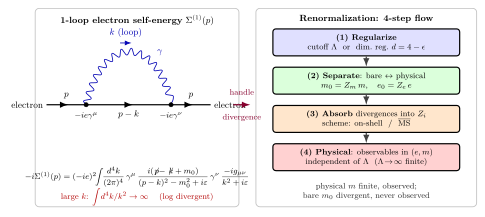

重整化 — 发散是从哪里来, 怎么吸收掉的?
上一节我们画了一阶 Feynman 图并代入规则得到 $\mu$-介子衰变振幅, 一切有限, 一切漂亮. 但这是一个技巧: 我们只用了 tree level (树图), 没有循环. 一旦允许粒子在内部线上绕一圈 — 比如电子先发射再吸收同一个虚光子 — 我们就被迫写下像 $\int\!d^4k/[(p-k)^2-m^2+i\varepsilon]\,[k^2+i\varepsilon]$ 这样的积分. 在大 $k$ 时被积函数按 $1/k^2$ 衰减, 但积分测度是 $d^4k = k^3\,dk\,d\Omega_3$, 所以 $\int dk\,k^3/k^2 = \int dk\,k \to \infty$. 线性发散. 同样一招推到顶点修正、光子真空极化, 全是发散.
这一现象在 1930 年代末曾让 Oppenheimer, Heisenberg, Pauli 一度认为量子电动力学本身是一个死胡同. 1947 年 Shelter Island 会议上, Lamb 报告了氢原子 $2S_{1/2}$ 与 $2P_{1/2}$ 之间 1057 MHz 的移位 — 本该简并, 实际不简并 — 这个数字要求理论给出一个有限的解释, 不能是 $\infty$. 接下来 18 个月, Bethe, Tomonaga, Schwinger, Feynman 用一种叫"重整化"的操作把 $\infty$ 变成可测的有限数, 成功对上 Lamb 移位与电子反常磁矩. 这套操作长期被科普描述为"把发散扫到地毯下", 甚至 Dirac 本人晚年都对它表示不安. 这种话传得多了就让人以为重整化是一个数学魔术. 本节要证明它不是 — 它是关于"哪些量物理可测, 哪些量只是拉氏量里的簿记变量"的一次精确划分.
一、发散从哪里来: 一阶电子自能的解剖
把 $\mathcal L_{\rm QED}$ 展开成 Feynman 规则后, 电子的 "自能" 图就是: 一个电子线发射一个虚光子再吸回来. 它的贡献用 $\Sigma(p)$ 记, 叫电子自能. 一阶 (单圈) 规则给出
\begin{equation} -i\Sigma^{(1)}(p) \;=\; (-ie)^2 \int\!\frac{d^4k}{(2\pi)^4}\,\gamma^\mu\,\frac{i(\slashed p - \slashed k + m_0)}{(p-k)^2 - m_0^2 + i\varepsilon}\,\gamma^\nu\,\frac{-ig_{\mu\nu}}{k^2 + i\varepsilon}. \end{equation}(我们用 Feynman 规范的光子传播子, $m_0$ 是拉氏量里的"裸"质量, 理由下节讲.) 大 $k$ 时, $\slashed p - \slashed k \approx -\slashed k$, 分母 $\sim k^2\cdot k^2 = k^4$, 分子 $\slashed k \sim k$, 因此被积函数按 $k/k^4 = 1/k^3$ 衰减. 乘上测度 $d^4k \sim k^3 dk$, 得 $\int dk\,k^3/k^3 = \int dk \to \infty$ — 形式上是对数发散 ($\ln\Lambda$). 做 Dirac 代数细一点, 分子里还有 $m_0$ 的项, 给一支线性发散 (但 Ward 恒等式保证这支被压) — 结论: $\Sigma^{(1)}(p)$ 含一个 $\ln\Lambda$ 的发散加一个有限部分.
明确写:
$$\Sigma^{(1)}(p) \;=\; A\,m_0 \ln(\Lambda^2/m_0^2) + B\,(\slashed p - m_0)\ln(\Lambda^2/m_0^2) + \Sigma_{\rm fin}(p),$$其中 $A, B$ 是 $\alpha/(4\pi)$ 量级的数值系数, $\Lambda$ 是我们下面要引入的截断, $\Sigma_{\rm fin}(p)$ 在 $\Lambda\to\infty$ 极限下有限. 这正是教科书说的"两支发散": 质量型 (正比 $m_0$) 与波函数型 (正比 $\slashed p - m_0$). 三阶不多不少, 这是我们下面能"吸收"住的关键.
数量级上, 若粗暴代入 $\Lambda = M_{\rm Planck} \sim 10^{19}\,\mathrm{GeV}$, 得 $\ln(\Lambda^2/m_e^2) \sim \ln(10^{44}) \approx 100$. 乘上 $\alpha/(4\pi) \sim 6\times 10^{-4}$, 得单圈"修正"到 $m_e$ 约 $6\%$. 看起来不致命 — 但若允许 $\Lambda \to \infty$, 这个数字就真无限大, 方程失去预言力. 必须处理.
二、Deepdive: 为什么重整化真的 works (不是扫地毯下)
这一节是本文的核心. 我要用最慢的节奏, 每一步都说破, 因为这一套很容易讲得含糊.
第 1 步 · 正则化 (regularize): 引入一个非物理参数让发散积分变成有限. 最直观的做法是动量截断: 把积分上限砍到 $\Lambda$, $\int^\infty \to \int^\Lambda$. 这样 $\Sigma^{(1)}(p,\Lambda)$ 是有限数, 只是明显依赖 $\Lambda$. 另一种更常用的 (因为它保规范不变性) 是维数正则: 把时空维度从 $4$ 推广到 $d = 4 - \epsilon$, 积分 $\int d^dk/(2\pi)^d$ 在 $\epsilon \gt 0$ 时收敛, 发散显示为 $1/\epsilon$ 极点. 't Hooft 与 Veltman 1972 年把这招系统化, 是今天的标准做法. 两种方案给出同一套物理预言 — 这是重整化能自洽的第一条验证: 结果与正则化方案无关.
第 2 步 · 分离裸参数与物理参数: 这是整个论证的哲学心脏. 拉氏量里写的 $m_0, e_0$ 叫裸 (bare) 参数, 它们是拉氏量上的书记员. 问: 能从实验里测到 $m_0$ 吗? 不能. 实验测到的是电子的极点质量 $m_{\rm phys}$ — 即 Dirac 方程加全部量子修正后, 电子传播子的极点位置. 同理, 实验测到的是 Thomson 极限下的 Coulomb 耦合 $e$ (或等价的 $\alpha = 1/137.036$), 不是 $e_0$. 换句话说, 裸参数 $(m_0, e_0)$ 从未出现在任何观测结果里, 它们是拉氏量的"坐标", 不是物理."坐标的选择自由" 正是我们下面要利用的自由度.
把这个自由度写成公式. 定义重整化常数 $Z_m, Z_e, Z_\psi, Z_A$:
\begin{equation} m_0 = Z_m\, m, \qquad e_0 = Z_e\, e, \qquad \psi_0 = Z_\psi^{1/2}\,\psi, \qquad A^\mu_0 = Z_A^{1/2}\,A^\mu. \end{equation}这里 $m, e, \psi, A^\mu$ 是物理 (重整化) 参数与场, $Z_i$ 是一套待定常数, 它们可以依赖 $\Lambda$ (或 $\epsilon$) 与 $\alpha$. 把拉氏量用这些重新写, 拆成 $\mathcal L = \mathcal L_{\rm ren}[m, e, \psi, A] + \mathcal L_{\rm ct}[\delta_m, \delta_e, \ldots]$, 其中 $\mathcal L_{\rm ct}$ 是"反项" (counterterms), 与 $\mathcal L_{\rm ren}$ 形状一模一样, 只是系数里含 $\delta_i = Z_i - 1$ 是发散的.
第 3 步 · 把发散吸进 $Z$: 现在我们既有发散的圈图贡献 $\Sigma^{(1)}(p,\Lambda)$, 又有反项 $\delta_m m, \delta_\psi(\slashed p - m)$ 提供的直接树图贡献. 规定: 选 $\delta_m, \delta_\psi$ 让它们的发散部分恰好抵消 $\Sigma^{(1)}$ 的发散部分, 剩下的有限量就是物理可测的辐射修正. 这一步叫"吸收"发散. 不同选择叫不同重整化方案:
- On-shell 方案 (BPHZ / Feynman): 要求 $m$ 就是传播子极点 ($\Sigma(\slashed p = m) = 0$), 要求 $e$ 是 Thomson 极限下的 Coulomb 耦合. 在这方案下 $Z$ 定义上"自然", 但计算技术较重.
- $\overline{\rm MS}$ 方案 ('t Hooft-Weinberg): 仅吸收 $1/\epsilon$ 极点加一个特定常数 ($\gamma_E, \ln 4\pi$), 有限部分全留给物理. 计算最简洁, 是当代 QCD 计算的默认. 代价: $m(\mu), \alpha(\mu)$ 依赖一个任意的重整化标度 $\mu$, 但物理量对 $\mu$ 的依赖会在所有阶加起来后精确抵消 (Callan-Symanzik 方程).
关键问题来了: 这为什么不是扫到地毯下? 因为注意我们在做什么. 我们没有"改写" $\Sigma^{(1)}$ 的发散让它变有限 — 发散依旧在那里, 只是它位于 $Z$ 因子里, 而 $Z$ 因子连接的是两件事: 一件是实验里测得的物理 $m$, 另一件是拉氏量里写的符号 $m_0$. 这两者之间的关系本就不需要有限. 扫地毯的比喻会成立, 仅当 $m_0$ 本身是可观测的 — 但它不是. 换言之, 重整化不是掩盖, 而是承认: 理论的参数化自由度和物理可测量的数量, 完全对得上.
第 4 步 · 验证有限: 现在计算任意一个物理可观测量 — 比方两个电子的散射截面 $\sigma(e^- e^- \to e^- e^-)$, 把所有树图 + 圈图 + 反项加起来, 用物理 $m, e$ 表达. 结果是: $\Lambda$ (或 $1/\epsilon$) 从最终表达式里完全消失. 不是"接近零", 不是"被压制", 是精确抵消. 因为 $\Sigma^{(1)}$ 的发散全被 $\delta_m, \delta_\psi$ 的反项树图吃掉, 剩下的只有函数形状, 用 $m, e$ 标定系数. 这是 BPHZ (Bogoliubov-Parasiuk 1956, Hepp 1966, Zimmermann 1969) 作为严格数学定理证明的: 在任意阶, QED/QCD/电弱中, 物理量对 $\Lambda$ 无关.
这里可以做一个比喻帮记忆. 你在一张地图上标点, 可以用经纬度, 也可以用极坐标. 这两个"参数化"给出不同的数字, 但同一个城市. 拉氏量里的 $m_0, e_0$ 和实验里的 $m, e$ 是同一个物理的两种参数化, 它们之间的"坐标变换" 是 $Z_i$. 只要这个变换给出的物理预言一致, 坐标变换本身是否发散无关紧要. 发散是坐标系选得"坏" — 但所有坐标系都有办法互相翻译, 而翻译出来的物理答案一样.
几何化: 这就是 Wilson 观点的前身. Wilson 1971 年把重整化再深入一层: $\Lambda$ 不是一个坏东西, 它代表我们"看"理论的分辨率. 把 $\Lambda$ 逐渐降低 (integrate out 高频模式), 耦合常数按一套微分方程流动 (renormalization group), 流动方向就是从紫外到红外. 于是"发散"变成"流动", 量子场论从一套修理技巧变成一台几何机器. 第 18 节还会回到 running coupling.

三、数字落地: $a_e$ 五圈与 $g-2$ 的 0.01 ppb 奇迹
证明重整化不是话术, 最有力的办法是代入数字. 电子反常磁矩 $a_e = (g-2)/2$ 在 Dirac 方程里是零, 在 QED 里只能从量子圈图出来, 正是重整化的直接检验舞台.
一圈 (Schwinger 1948): $a_e^{(1)} = \alpha/(2\pi) \approx 1.161\,409\times 10^{-3}$. 这个结果 Schwinger 用一个下午和一支笔算出, 刻在他的墓碑上. 数字级别 $\alpha/(2\pi) \sim 10^{-3}$, 很准.
二圈 (Karplus-Kroll 1950, 后被 Petermann 与 Sommerfield 修正): 系数 $\approx -0.328\,5$, 贡献 $-0.177\,2\times (\alpha/\pi)^2 \approx -9.5\times 10^{-7}$.
三圈 (Laporta-Remiddi 1996, 全解析): 系数 $\approx 1.181$, 贡献 $\approx +2.9\times 10^{-8}$. 这是一个六位数字的里程碑 — 需要算 72 张图.
四圈 (Kinoshita 团队, 1999-2012): 系数 $\approx -1.91$, 需要 891 张图, 数值贡献 $\approx -1.1\times 10^{-11}$.
五圈 (Aoyama-Hayakawa-Kinoshita-Nio, 2012-2019): 12672 张图, 系数 $\approx +7.7$, 贡献 $\approx +9\times 10^{-13}$. 加上微小强相互作用与弱相互作用贡献, 理论值
$$a_e^{\rm theory} \approx 0.001\,159\,652\,181\,61(23),$$实验值 (Harvard Penning 阱, Gabrielse 团队 2008, Northwestern 2023 更新)
$$a_e^{\rm exp} \approx 0.001\,159\,652\,180\,59(13).$$吻合到 $10^{-12}$, 约 $0.01$ ppb. 对应 $g-2$ 本身:
$$g_e^{\rm theory} = 2.002\,319\,304\,362\,56\ldots,\qquad g_e^{\rm exp} = 2.002\,319\,304\,361\,18\ldots.$$这是科学史上最精确的理论-实验对照. 它意味着什么? 意味着我们不仅把 $\Sigma^{(1)}$ 的 $\ln\Lambda$ 吸收住了, 还必须把五圈之前 所有 发散, 包括子图嵌套 (subdivergence) — 这是 BPHZ 定理真正的技术难点 — 全部系统地处理干净, 然后剩下的有限部分居然精准对上实验. 如果重整化是"扫地毯下", 绝无可能有这种吻合. 扫地毯扫不出五圈 72 万张图的协调一致.
再来一个粗糙数量级. 取 QED 单圈真空极化贡献到 $\alpha$ 的 running, 从 $m_e$ 跑到 $M_Z \sim 91\,\mathrm{GeV}$, 代入 $\alpha(\mu)$ 公式, $\ln(M_Z^2/m_e^2) \sim 24$, 得 $\alpha(M_Z)^{-1} \approx 137 - (1/3\pi)\cdot 24 \approx 137 - 2.5 \approx 134.5$ (裸估), 实测 $\alpha(M_Z)^{-1} \approx 127.9$ — 差距是因为漏了 $\mu, \tau,$ 夸克 对真空极化的贡献. 数量级正确, 这也是一次"重整化过程 = 跑动耦合 = 可测" 的验证.
四、极限、反例、历史: 可重整化是一条硬标准
极限检验: 不可重整化理论长什么样. 重整化之所以值得信, 因为它不是什么都能吸收. 有一类理论它根本吸不动 — Fermi 的 1934 年四费米子 $\beta$ 衰变理论. Fermi 写的相互作用是
$$\mathcal L_{\rm Fermi} \;=\; G_F\,(\bar p\gamma^\mu n)(\bar e\gamma_\mu\nu) + \text{h.c.},$$耦合常数 $G_F$ 的量纲是 [能量]$^{-2}$, $G_F \approx 1.166\times 10^{-5}\,\mathrm{GeV}^{-2}$. 一个带量纲耦合的坏消息在圈图上立刻暴露: 每多一阶圈, 振幅里就多一个 $G_F\,\Lambda^2$ — 因此发散类型不是有限 (像 QED 那样, 只有 $\delta_m, \delta_\psi, \delta_e$ 几个), 而是随阶数无限扩张. 每一阶发散需要一个新型的反项, 反项种类无穷 — 就是说, 你需要无穷多个从实验里测的参数才能做出有限预言. 这等价于理论没有预言力.
这一诊断是 Dyson 1949 年用"幂次计数" (power counting) 给出的判据: 耦合常数量纲 $\ge 0$ 的理论可重整化, 量纲 $\lt 0$ 的不可重整化. $G_F$ 量纲是 $-2$, 判死. Fermi 理论只能在 $E \ll G_F^{-1/2} \approx 300\,\mathrm{GeV}$ 以下当有效理论用, 高能失效.
真正的解决是把它嵌入更高对称. Glashow-Salam-Weinberg 1961-1968 把 $\beta$ 衰变看成交换一个重的 $W$ 玻色子, 耦合无量纲 (叫 $g$, 无量纲), 理论可重整化 — 't Hooft 1971 年证明了. Fermi 常数是低能近似 $G_F/\sqrt 2 = g^2/(8M_W^2)$, 在 $E\ll M_W \approx 80.4\,\mathrm{GeV}$ 时恢复. 这是"可重整化 = 完整理论, 不可重整化 = 低能近似" 的模板. 后来广义相对论作量子场论直接失败 — 引力子耦合 $G_N$ 量纲 $-2$, 同样诊断 — 提示我们量子引力需要比场论更深的结构 (弦, circles AdS/CFT, 全息). 这是粒子物理未完成的大问题.
可重整化理论清单: QED (U(1), 1947-49 完成), QCD (SU(3), Politzer-Gross-Wilczek 1973, 't Hooft 证渐近自由加可重整), 电弱 SU(2)$\times$U(1) ('t Hooft-Veltman 1971). 加在一起就是标准模型. 标准模型的基本正当性 — 为什么我们相信它的预言 — 有一半是靠它可重整化, 一半是靠实验验证.
历史脉络: 1947 年 6 月 Shelter Island 会议上 Lamb 报告 1057 MHz 移位; 几周后 Bethe 在火车上用非相对论方法 (截到 $\Lambda = m_e c^2$) 算出 1040 MHz, 把两个 $\infty$ 相减得到有限数, 第一次展示"重整化" 的核心想法. 接下来 18 个月, 朝永振一郎 (东京, 1943 年独立发展的超多时形式主义在 1947 年发到 Oppenheimer), Schwinger (哈佛, 1948 年初算出 $a_e = \alpha/2\pi$), Feynman (康奈尔, 1948 年发展图解规则) 三方独立给出系统的协变重整化方案. Dyson 1949 年证明三者等价并给出所有阶的证明纲要 — 就是那篇 "The Radiation Theories of Tomonaga, Schwinger and Feynman". 三人 1965 年共同得诺贝尔奖; Dyson 被普遍认为"被诺贝尔遗漏".
1956-1969 年, Bogoliubov-Parasiuk-Hepp-Zimmermann (BPHZ) 把重整化从"物理家的技巧" 提升为严格的数学定理: BPH 定理证明了嵌套子发散能被递归抵消, Zimmermann "forest formula" 给出所有阶反项的封闭公式. 这一支工作在俄罗斯学派 (Boris Bogoliubov) 和德国学派 (Klaus Hepp, Wolfhart Zimmermann) 之间完成, 是数学物理的里程碑.
1971-1972 年, 't Hooft 与 Veltman 发明维数正则与 BRST 形式, 证明 Yang-Mills 型规范理论可重整化, 为电弱理论 (Weinberg 1967, Salam 1968) 的可信度奠基 — 1999 年诺贝尔奖. 1971-1974 年, Wilson 用格点与积出 (integrating out) 高动量模式的观点, 重新阐释整套过程: 重整化不是修复发散, 而是描述耦合常数在能标间的几何流动 — 1982 年诺贝尔奖. 从 Schwinger 的一圈墓志铭到 Wilson 的 RG 几何, 重整化走了约 35 年. 它不是一个"操作", 而是一张关于"物理可观测量如何独立于坐标选择" 的完整理论.
小结
重整化的真相不是"把发散藏起来", 而是承认: 拉氏量里的参数 $m_0, e_0$ 是簿记变量而非观测量, 从未出现在任何实验结果里; 观测量是物理 $m, e$, 它们通过发散的 $Z$ 因子与 $m_0, e_0$ 相连. 四步流程: 正则化 (引入 $\Lambda$ 或 $\epsilon$), 分离 ($e_0 = Z_e e$ 等), 选方案吸收发散 (on-shell 或 $\overline{\rm MS}$), 验证物理量在 $\Lambda\to\infty$ 下有限 — 这套方案让 QED 算出电子 $g-2$ 与实验吻合 12 位数字, 这不是话术而是工程学. 可重整化是一条硬标准: QED, QCD, 电弱可过, Fermi 四费米子 与量子引力不行 — 不可重整意味着"只能作低能有效理论, 高能处另有更基础结构". 下一节把这里隐含的"耦合随能标跑" 展开: 真空极化如何让 $\alpha$ 随 $\mu$ 增大, QCD 如何让 $\alpha_s$ 在高能处变小 (渐近自由), 以及 running 如何指向 GUT 尺度 $\sim 10^{16}\,\mathrm{GeV}$ 上的大统一.
▲